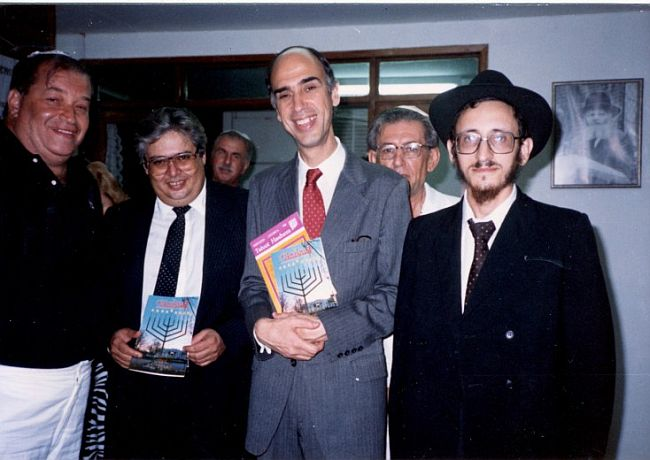

1) בכלל - כעצת רופא ידיד.
הנני מביע את הכרתי העמוקה בעבודה הנעשית על ידי כבודו, ואיחוליי ששליחותך – של שלום, אמונה וחכמה, תתפשט לא רק להרבה שנים אלא גם בכל העולם כולו” פתק קטן של פדיון-נפש ששלחה אחת ממקורבות בית חב”ד ברסיפה שבברזיל – היה השלב הראשון בפרשייה מרתקת, שקישרה את הרב חזן עם הסנאטור מרקו מאסיעל, האיש מספר 2 במ
הנני מביע את הכרתי העמוקה בעבודה הנעשית על ידי כבודו, ואיחוליי ששליחותך – של שלום, אמונה וחכמה, תתפשט לא רק להרבה שנים אלא גם בכל העולם כולו”
פתק קטן של פדיון-נפש ששלחה אחת ממקורבות בית חב”ד ברסיפה שבברזיל – היה השלב הראשון בפרשייה מרתקת, שקישרה את הרב חזן עם הסנאטור מרקו מאסיעל, האיש מספר 2 במימשל הברזילאי, ומנהל משכן הנשיא >> מכאן נסללה הדרך למכתב ברכה מיוחד ששיגר נשיא ברזיל לרבי מלך המשיח, לרגל יום הולדתו >> מכתב התשובה של הרבי הוגש לנשיא ברזיל בפגישה מיוחדת, וביחידות נדירה הורה הרבי על מה לדבר במהלך המפגש >> שיאה של הפרשייה בפגישה ארוכה של הסנאטור מרקו מאסיעל עם הרבי, שהרבי הגיה פעמיים, והנאום הדרמטי שנשא בסנאט הברזילאי בערב יום הכיפורים על שבע מצוות בני נח, בעקבות בקשת הרבי >> והכל התחיל מפתק אחד קטן…
מאת: הרב שלום יעקב חזן

בתחילת תמוז תשמ”ג זכיתי לצאת בשליחות הרבי מלך המשיח לעיר רסיפה, בירת מחוז פרנמבוקו שבברזיל. כאשר הגעתי לעיר, מצאתי קהילה יהודית וותיקה, בת שבעים שנה, עם בית כנסת מרכזי, אבל עם עזובה רוחנית גדולה.
בחודשים הראשונים לשליחותי, הנהגת בית הכנסת של הקהילה לא הייתה מתאימה להוראות התורה, ולא מתוך התנגדות אלא פשוט מחוסר ידיעה. כך למשל כאשר דיברתי עם הגבאים על כך שאסור להפעיל מקרופון בשבת, הם אמרו בתמימות שבלי הרמקול אנשים לא ישמעו את התפילה. הם כיבדו אמנם את בקשתי והסירו את המקרופון, אבל כאשר הגיעו החגים החזירו את מערכת ההגברה “כי מגיעים הרבה אנשים, ולא שייך לשמוע את החזן”…
בראש השנה, כאשר סיימו את קריאת התורה, הופתעתי לשמוע את הבעל–קורא מתחיל שוב את כל הקריאה, וממשיך להעלות עוד ועוד מתפללים. כאשר ניגשתי את הגבאי לשאול לפשר המנהג החדש, ראיתי גם שטרות של כסף על בימת הקריאה. הגבאי הסביר לי בתמימות, שאנשים אלו מגיעים רק לראש השנה ויום הכיפורים, וכולם רוצים לקבל עלייה לתורה. לכן הוא החליט לנהוג בקריאת התורה של ראש השנה על דרך הנהוג בכמה מקומות בקריאת התורה של שמחת תורה, ולקרוא שוב ושוב עד שכולם יקבלו עלייה… כאשר שאלתי מה שטרות הכסף עושים על בימת הקריאה? השיב בפשטות שאנשים שילמו על העלייה שלהם… ‘ומדוע לא תקח מהם את התרומה לאחר החג?’, שאלתי, והוא לא הבין את פשר השאלה - ‘איפוא אמצא אותם אחרי שבת’?… הוא באמת לא חשב שיש בזה בעייה…
לאחר שעברתי בצורה דומה את חגי תשרי, והבנתי שייקח זמן להשפיע עליהם להנהיג את בית כנסת לפי כללי ההלכה - העדפתי לפתוח מניין תפילה בבית חב”ד, שהיה בשכונה מרוחקת מבית הכנסת המרכזי. זקני הקהילה המשיכו ללכת לבית הכנסת המרכזי, אבל הצעירים - שקודם לכן בכלל לא ביקרו בבית הכנסת - החלו להגיע למניין החדש בבית חב”ד.
כאשר התקרבו חגי תשרי תשמ”ה, נקלעתי לדילמה: ידעתי שבחודש החגים מגיעים בני הקהילה לבית הכנסת המרכזי, כולל הצעירים, ואם אקיים את המניין בבית חב”ד, זה יכול להתפרש כהכרזת מלחמה על הקהילה הוותיקה. מכיוון שרציתי להתרחק מהמחלוקת, ומכיוון שגברו הגעגועים להיות אצל הרבי בחודש תשרי - החלטתי לנסוע לרבי לראש השנה ויום הכיפורים, ולחזור לרסיפה לחג הסוכות.
סיפרתי למקורבי בית חב”ד על נסיעתי לרבי, וכדי לקשר אותם לרבי, עוררתי אותם לכתוב לרבי פ”נ לקראת השנה החדשה. אחת מהן, אשה בשם סנדרה (שולמית) מוצ’ניק, כתבה שיש לה בעייה רפואית בגב, והרופאים אומרים שעליה לעבור ניתוח בחוט השדרה. מדובר בניתוח מסוכן מאוד, והיא ביקשה את עצתו וברכתו של הרבי.
כאשר הגעתי לבית חיינו, בכ”ז אלול תשד”מ, הכנסתי למזכירות את ערימת המכתבים ששלחו המקורבים. בהכירי את הנהגות הקודש של הרבי בימים אלה, שעסוק בהכנות לקראת ראש השנה, ומשיב רק לשאלות דחופות ביותר - לא ציפיתי בכלל לקבל מענה כלשהו.
משום כך, כאשר למחרת בבוקר הודיעו לי מהמזכירות כי יש עבורי תשובה מהרבי, לא הבנתי בכלל על מה מדובר… מה גדלה הפתעתי כאשר ראיתי כי הרבי ענה על שאלתה של גב’ מוצ’ניק, בזה הלשון:
1) בכלל - כעצת רופא ידיד.
2) דיוק בכשרות האכילה ושתי’. אזכיר על הציון.
כמובן שלאחר ברכת הרבי, לא היה ספק בליבי שבעייתה תחלוף. הספק שניקר בליבי, היה רק האם היא תסכים לקבל על עצמה לדייק בכשרות האכילה, למרות כל הקשיים הכרוכים בכך במקום שליחותינו.
החנות הקרובה ביותר עם אוכל כשר, הייתה בעיר ס. פאולא, מרחק שלוש טיסה מרסיפה… בכל פעם שהיינו מזמינים בשר כשר, הרבנית אלפרין, רעייתו של הרב שבתי אלפרין שליח הרבי ומנהל בית חב”ד המרכזי בס. פאולא - הייתה אורזת היטב ארגז גדול, שולחת אותו עם העובדים של בית חב”ד לנמל התעופה, שם היו שולחים את החבילה בטיסה לרסיפה, ואנחנו היינו צריכים לנסוע לשדה התעופה כדי לשחרר את החבילה… מוצרי חלב לא היו בכלל, וכדי להשיג חלב רגיל הייתי צריך לנסוע למחלבה. בקיצור, חיים לא קלים. אנחנו, שחונכנו לכך מילדות, הסתדרנו עם זה. אבל האם גב’ מוצ’ניק תצליח להתמודד עם האתגר?
כנראה שיחד עם הוראתו של הרבי, מעניק הרבי כוחות מיוחדים לקיים את ההוראה. כך היא קיבלה על עצמה לשמור כשרות, ולאחר זמן קצר הבעייה שהייתה לה בגב נפתרה ללא צורך בניתוח.
כמובן שלאחר המופת הזה, ועם השמירה על הכשרות, היא ומשפחתה התקרבו מאוד לפעילות של חב”ד ברסיפה, והיו למשתתפים קבועים בתפילות ובאירועים השונים.
הסנאטור הבכיר מגיע לבית חב”ד
לקראת חנוכה תשמ”ז, ארגנו אירוע לבני הקהילה. כמה ימים לפני האירוע ניגשה אליי גב’ מוצ’ניק ואמרה שיש לה קשר עם הסנאטור מרקו מאסיעל, האיש מספר 2 במימשל הברזילאי, ומנהל משכן הנשיא, ואם אני מעוניין בכך - היא יכולה לסדר שהוא ישתתף באירוע בחנוכה.
בעוד בארצות הברית היהודים מהווים כוח פוליטי חזק מאוד, והפוליטיקאים השונים מבקשים את קרבתם - הרי בברזיל הקהילה היהודית היא בקושי פרומיל מכלל האוכלוסיה, ועד אותה תקופה לא היה שום קשר בין הקהילה היהודית לאנשי המימשל. לא רק חב”ד, אלא כל הקהילות היהודיות, מעולם לא הזמינו פוליטיקאים לאירועים יהודים.
על רקע זה, ההצעה שלה הייתה מוזרה מאוד. מה גם שלא חשבתי שיש לה קשר כל כך טוב, שהיא באמת יכולה להביא אותו לאירוע כל כך קטן. רק כדי שתהיה מרוצה, אמרתי לה שבוודאי אשמח אם הוא יגיע. בזה תם הסיפור מבחינתי.
מה גדלה הפתעתי כאשר לקראת החגיגה הודיעה לי הגב’ מוצ’ניק כי הסנאטור יופיע עם רעייתו. קיבלתי אותו בכבוד גדול, הושבתי אותי בשולחן הכבוד, וניצלתי את הזמן שישב שם לשוחח עמו על מבצע ‘רגע של שתיקה’ שהרבי עורר בשנים ההן. הסנאטור מרקו מאסיעל התגלה כאדם חכם ומעמיק מאוד, שביקש לדעת עוד ועוד. אחר–כך נשא נאום יפה, ובין השאר התייחס לחופש הדת בברזיל. הענקנו לו תעודת הוקרה מיוחדת מטעם בית חב”ד, וכן עלונים על פעילות חב”ד, ואחר–כך הוא השתתף במעמד הדלקת החנוכיה ברחובה של עיר.
בדו”ח ששלחתי לרבי באותם ימים, כתבתי באריכות על ביקורו, וציינתי ש”נוכחותו במסיבה גרמה לקידוש ה’ וקידוש שם חב”ד גדול מאוד בכל הקהילה”. ואכן ביקורו עורר רעש גדול בקהילה היהודית. הם פועלים בעיר כבר שבעים שנה, ובית חב”ד רק כשנה וחצי, ואישיות כזאת חשובה בוחרת להגיע לאירוע של חב”ד. זה הרים את קרנה של חב”ד בקרב אנשי הקהילה.
נשיא ברזיל מברך את הרבי
לקראת י”א ניסן חשבתי שאם ההשגחה העליונה קישרה אותי עם פוליטיקאי כזה בכיר, שהוא גם מנהל משכן הנשיא - כדאי להשתדל שהוא יסדר עבורנו פגישה עם נשיא ברזיל, מר זאסע סארנעיי, לספר לו על הרבי ופעולותיו בעולם כולו, ולהציע לו לכתוב מכתב ברכה לקראת יום הולדתו של הרבי.
גב’ מוצ’ניק סידרה פגישה עם הסנטור במשרדו בעיר הבירה, ברזיליה, שם ממוקמים כל משרדי הממשלה. מכיוון שמדובר כבר במשהו ארצי, התקשרתי לרב שבתי אלפרין, מנכ”ל בתי חב”ד בברזיל, ויחד הגענו לפגישה עם הסנאטור. סיפרנו לו על הרבי ותנועת חב”ד, והוא התרשם עמוקות והתבטא שזו תהיה זכות עבורו לקשר את הנשיא של ברזיל עם מנהיג העם היהודי.
זמן קצר לפני י”א ניסן, התקשר אליי הסנאטור, והודיע שמכתבו של הנשיא מוכן. לאחר שקיבלנו לידינו את המכתב, נסעתי יחד עם הרב שבתי אלפרין לבית חיינו, כדי להגיש לרבי את המכתב המיוחד.
בי”א ניסן בבוקר, כאשר הרבי הגיע ל–770, עמדנו במבואת הכניסה, ולאחר שהרבי סיים לחלק צדקה לילדים שעמדו במקום, הרב אלפרין הגיש לרבי את המכתב ואמר שזה מכתב מנשיא ברזיל.
במקביל, הכנסתי דרך המזכירות תרגום של המכתב - מפורטוגזית ללשון הקודש. וזה תרגום המכתב:
לכבוד הדרתו
הרב מנחם מ. שניאורסאהן
אדמו”ר מליובאוויטש שליט”א
יש לי הכבוד לפנות לכבוד הדרתו לאחל לו לרגל מלאת לו 85 שנה, והנני מאחל לו איחולים כנים של אושר אישי.
אני מלווה בהרבה התעניינות את עבודתו הרוחנית עבור חברה עם יותר צדק, יותר הומניות ויותר אחדות.
בשם העם הברזילאי, הנני מביע את הכרתי העמוקה בעבודה הנעשית על ידי כבודו, ואיחוליי ששליחותך - של שלום, אמונה וחכמה, תתפשט לא רק להרבה שנים אלא גם בכל העולם כולו.
במכתב נפרד כתבתי לרבי על פרשיית הדברים, כיצד הגענו לנשיא ברזיל בזכות מרת מוצ’ניק וקשריה עם הסנאטור מרקו מאסיעל. כמו כן ציינתי שהנשיא רצה לפגוש אותנו אישית ולהעניק לנו את המכתב, אבל בגלל המצב הפוליטי המתוח ששרר באותן שבועות בברזיל - נבצר ממנו לפנות זמן לפגישה זו, והוא העביר את המכתב דרך מזכירו.
לאחר שהעברנו את המכתב לרבי, יצרתי קשר עם אחד ממקורביי, סוכן נסיעות שהיה מפרסם הרבה בעיתון הנפוץ ביותר במחוז פרנמבוקו, והתנדב לפרסם על חשבונו פרסומים שונים לקראת החגים. העברתי לו את המכתב של נשיא ברזיל, עם כתבה מתאימה, וביקשתיו להכניס לעיתון בערב פסח. הפרסום עשה רושם גדול על יהודי הקהילה, וכאשר כתבתי על כך לרבי, כתב הרבי על הדו”ח: נת’[קבל] ות”ח [ותשואות חן]. בנוסף הרבי הורה למזכיר להעביר לי את המכתב שיצא באותם ימים בקשר לתהלוכות ל”ג בעומר, כדי שאוכל לתרגמו לפורטוגזית ולפרסם בעיר.
יחידות מיוחדת לקראת הפגישה עם נשיא ברזיל
לאחר שחזרתי לברזיל, התקשר אלי המזכיר הרב יהודה לייב גרונר, והודיע לי שהרבי הכין מכתב תשובה עבור נשיא ברזיל. המכתב נכתב בתאריך כ”ח ניסן.
מכיוון שבאותן שנים היה נהוג שמידי פעם היו מארגנים מפגש מיוחד של השלוחים עם נשיא ארצות הברית - חשבנו שכדאי לסדר מעמד דומה גם בברזיל, ובמהלך המפגש נמסור לו את מכתבו של הרבי. שוחחתי על כך עם הסנאטור מרקו מאסיעל, והוא אמר שישמח לארגן את הפגישה הזאת.
בדיוק באותה שנה יזם הרב אברהם שם טוב להחתים את נשיאי המדינות בעולם על מגילת כבוד לרגל שנת השמונים וחמש להולדת הרבי. מכיוון שכך, עלה לי הרעיון להביא את הרב שם טוב לפגישה עם נשיא ברזיל, ולצרף אותו ליוזמה המיוחדת.
כאשר דיברתי על הרעיון עם הסנאטור וסיפרתי לו שמדובר ביוזמה בינלאומית. הוא התלהב מאוד מהרעיון, וכעבור זמן קצר חזר אליי עם תשובתו החיובית של נשיא ברזיל. הוא גם אמר שמפאת חשיבות הפגישה, הוא הקדיש חצי שעה למפגש עם הנשיא.
מפגש של חצי שעה, נחשב לארוך במיוחד, ומכיוון שאפשר בזמן זה להעלות כמה נושאים חשובים, התקשרתי למזכירות הרבי, וביקשתי מהרב גרונר שידווח לרבי על הפגישה המתוכננת, ואולי הרבי יואיל לתת לנו הוראות מה לדבר עם הנשיא.
הרבי אכן ראה בפגישה זו חשיבות רבה, ולמרות שבאותן שנים כבר לא התקיימו יחידויות - הורה הרבי שהרב שמטוב ייכנס לחדרו הקדוש ביום הנסיעה, ומסר לו הוראות מפורטות מה לומר לנשיא ברזיל. כמו כן מסר לו הרבי שטרות של דולרים לקבוצת השלוחים שישתתפו בפגישה עם הנשיא. וכן אמר לו הרבי למסור דרישת שלום לאנ”ש ובמיוחד לשלוחים.
הנשיא הכריז על יום אבל אבל לא ביטל את המפגש
הפגישה עם נשיא ברזיל מר סארנעיי התקיימה בהשגחה פרטית ביום זכאי ט”ו אלול - יובל התשעים להתייסדות ישיבת תומכי תמימים. יחד עם הרב שבתי אלפרין, עמדנו בראשות המשלחת המיוחדת, ועמנו היו השלוחים מרחבי ברזיל: הרב דוד וויטמאן, הרב יוסף שילדקרויט, הרב זלמן סלונים והרב שמאי ענדע - מס.פאולא; הרב מנחם מענדל ליברוב והרב נח גנזבורג - מפורטו אלגרה; הרב יוסף יצחק דובראווסקי - מקוריטיבה; הרב נסים קטרי - מבעלא הריזונטה, הרב יוסף שימאנאוויץ - מברזיליה; הרב דיזראלי זאגורי - מבלם; והרב יהושע בנימין גולדמן - מבית ליובאוויטש ריו די ז’נרו. אל הפגישה הגיעו גם חברי הקונגרס היהודים של ברזיל: מר פאריא פעלדמן, מר מאקס רוזנבום, מר משה ליפניק, מה שהוכיח את השפעתו של הרבי והכבוד הרב שרחשו אנשי הממשל לפעילות שלוחי הרבי.
הנשיא מר ז’אסע סארנעיי ראה חשיבות מיוחדת במפגש עם השלוחים, ולמרות שבלילה הקודם פוצץ מטוס על נוסעיו, ובין הנספים היה שר החקלאות - הנשיא הכריז על יום אבל לאומי וביטל את כל פגישותיו, חוץ מהפגישה עם השלוחים של הרבי!
במהלך הפגישה הציגו השלוחים את עצמם ומקום שליחותם, ואחר–כך הנשיא חתם על מגילת הכבוד הבינלאומית לכבודו של הרבי, בה נכתב על הצורך להחדיר בתודעה העולמית את החיוב לקיים את שבע המצוות שבני נח נצטוו מפי הגבורה בהר סיני, ופועלו של הרבי שליט”א ברוח זו.
לאחרי נאומיהם של מר בוריס טבקוף נשיא ידידי בית חב”ד בברזיל, והרב שבתי אלפרין שליח הרבי לברזיל - הגיש הרב שמטוב לנשיא את אגרת הברכה של הרבי, במסגרת נהדרת ובראשה תמונת הרבי שליט”א.
הנשיא קרא בעיון רב את האגרת, בה מודה לו הרבי על הברכות ששלח לקראת יום הולדתו. בהמשך המכתב מתייחס הרבי לפעילות של בתי חב”ד בברזיל, כסניף לתנועת חב”ד העולמית, ובשם תנועת חב”ד שהוא עומד בראשה - מוסר את הערכתו לנשיא ולכל העם בברזיל על חופש הדת שמאפשר את כל הפעילות הזאת.
הרבי מסיים את מכתבו באיחולים בלשון חז”ל “ואברכה מברכך”, שהקב”ה מקור הברכות יעניק את ברכתו לנשיא ולמשפחתו, ולכל העם הברזילאי.
לאחרי שסיים לקרוא את אגרת הברכה, מסר הרב אברהם שמטוב לנשיא בהוראת הרבי את תוכן מכתבו של נשיא ארה”ב רונלד רייגן, שכתב לרבי כי הוא מנצל את זמן חופשתו כדי לשלוח את המכתב לרבי. במכתבו מצביע הנשיא רייגן על כך שלאחרונה האקדמאים והאינטלקטואלים, כולל הפוליטיקאים, הגיעו להכרה שבכדי לבטל את תחלואי הדור יש צורך לחזור למקורות ולמסורת האבות, וממשיך במכתבו שהוא רואה חשיבות רבה ביותר בתנועת חב”ד שפועלת ברוח זו, ומכיר טובה במיוחד למנהיגה, כ”ק אדמו”ר שליט”א.
הרב שמטוב מסר לנשיא ברזיל גם נקודה מתוכן מכתב התשובה של הרבי לרייגן, שהיות ואנו מתקרבים כעת לראש השנה, שהוא יום בריאת האדם כולל כל האנושות, הרי זה יום מסוגל ביותר לכל אחד ואחד לפעול ברוח הנ”ל, ובמיוחד לראשי ונשיאי מדינות.
הרבי גם ביקש להדגיש לנשיא - שהוא השני שחותם על “מגילת הכבוד הבין לאומית” בהמשך לחתימתו של הנשיא רייגן.
הנשיא סארנעי, ששמע בתשומת לב רבה את דברי הרבי אליו, הגיב בהתרגשות:
“אני מלווה את עבודתו של הרבי מליובאוויטש ושלוחיו למען יהדות העולם ולמען האנושות, ולכן אני רואה ככבוד רב לחתום על מגילת הכבוד הבין לאומית, בהמשך למכתב שכבר שלחתי אל הרבי מליובאוויטש שליט”א לרגל יום הולדתו”.
הנשיא גם הדגיש שברזיל, בתור מדינה שיש בה חופש דת, יודעת היטב ומכירה בזה שהיא חייבת הרבה ליהודים שבאו לברזיל והביאו אתם את מושגי המוסר ודת, ועזרו רבות לפיתוח המדינה.
בסיום החזיר הנשיא ברכה לכ”ק אדמו”ר שליט”א כלשון אגרת ברכתו של כ”ק אדמו”ר שליט”א “כל המברך מתברך” ואיחל לרבי שליט”א הצלחה רבה בעבודתו לאורך ימים ושנים טובות מתוך בריאות איתנה. הנשיא גם ניצל הזדמנות זו למסור ליהודי ברזיל ברכת שנה טובה לשנה החדשה הבעל”ט.
לקראת סיום הפגישה הגשתי לנשיא את ספר התניא שהודפס ברסיפה בצירוף “שער היחוד והאמונה” שיצא לאור בתרגום לשפת פורטוגזית. הדגשתי שרסיפה היא עיר היסטורית עבור יהודי אמריקה כי שם הייתה הקהילה היהודית הראשונה בכל יבשת אמריקה הדרומית והצפונית. ולאחרונה גם מצאו את המקום המדויק בו הי’ בית הכנסת הראשון בעיר זו.
בסיום הפגישה שרו השלוחים “דידן נצח” בנוכחות הנשיא. תוכן המילים “דידן נצח” התאימו מאוד לאירוע זה, כאשר הרבי כבש עוד מדינה בט”ו אלול תשמ”ז - “כל גוים אשר עשית יבואו וישתחוו לפניך ה’ ויודו לשמך”.
לאחר הפגישה המוצלחת שלחתי דו”ח מפורט לרבי, כולל צילום מידיעה מכובדת על המפגש שנדפס בעיתון. במכתב הרבי שקיבלתי, ציין הרבי את נחת רוחו מהדו”ח, כאשר בשורה הראשונה היה כתוב “מאשר הנני קבלת המכ’ וכו’”, והרבי הוסיף בכתי”ק והמכ”ע [= והמכתב–עת].
ראיתי בכך דבר מעניין, שגם על מכתב הנשיא, וגם על הפגישה עמו - הרבי לא הגיב לעצם העניין, אלא לאחר פרסומו בעיתון, דבר שגרם קידוש ה’ גדול ועורר יהודים רבים להיות גאים ביהדותם.
הרבי קורא לברזיל להיות טובים יותר מארה”ב
כמה שנים אחר–כך, בשנת תשמ”ט, פנה אליי יהודי בעל עסקים מריו די ז’נרו, שרצה לקבל תמיכה ממשלתית לעסק מסויים שהקים, והיה זקוק לקשרים עם אנשי המימשל. מכיוון ששמע שיש לי קשר טוב עם הסנאטור מרקו מאסיעל, ביקש שאסייע לו בכך. עזרתי לו בשמחה, ובעקבות הקשר שנוצר, הוא אכן קיבל את התמיכה הממשלתית. לאות הוקרה, העניק לסנאטור טיול מיוחד, הוא ואשתו, יחד עם גב’ מוצ’ניק ובעלה - לארץ ישראל ולארצות הברית.
כאשר שמעתי על הביקור בארץ ישראל, דאגתי שהם יבקרו בכפר חב”ד; וכאשר נודע לי כי הם אמורים להיות גם בניו–יורק, חשבתי שזו הזדמנות טובה להביא אותו אל הרבי. דיברתי איתו על כך, והוא מאוד שמח על הרעיון.
כתבתי הכל לרבי, וסיכמתי עם הרב יהודה לייב גרונר, שכאשר נגיע לחלוקת הדולרים - שהתקיימה באותם ימים בביתו של הרבי ברחוב פרזידנט - הוא יציג את הסנטור ורעייתו לפני הרבי.
כשהגענו, הרב גרונר הציג אותו לפני הרבי, אולם הרבי לא הגיב וחיכה שאני אציג אותו. מלכתחילה לא ההנתי לפתוח את פי לפני הרבי, אבל מכיוון שזה היה רצונו של הרבי, הצגתי את ד”ר ומרת מארקו מאסיעל לפני הרבי. הסנאטור דיבר בפורטוגזית ואני שימשתי כמתרגם. הרבי דיבר באידיש.
הרבי נתן לסנטור שני דולרים ואיחל לו הצלחה רבה, והוסיף (באנגלית): “הצלחה רבה בכל עניניך”.
הסנטור סיפר לרבי על הערכתו הרבה ושביעות רצונו מפעילות חב”ד בברזיל, והודה לרבי על שליחת השלוחים לברזיל, ובפרט לרסיפה. הוא ציין שזהו כבוד מיוחד עבורו להכיר את הרבי באופן אישי אחרי ששמע כל כך הרבה אודותיו ומגוון פעילויותיו ברחבי העולם.
הרבי פנה אליי ואמר: “אנא מסור שאני מאד מרוצה שנפגשתי כאן עם סנטור כל כך חשוב, שיש לו כזו אשה שמסייעת לו. ודאי שזה מוסיף באופן משמעותי בהצלחת עבודתו”. אחר–כך הרבי נתן לסנטור שני דולרים נוספים ואמר: “הנה שני דולרים נוספים עבור הצלחה מרובה ביותר”. כמו כן נתן הרבי לאשת הסנטור שני דולרים וציין: “זה עבור העזרה לבעלך”.
אחר כך פנה הרבי לגב’ שולמית מוצ’ניק והתעניין: “האם את עוזרת גם שם”? גב’ מוצ’ניק השיבה בחיוב, והרבי נתן לה ארבעה שטרות של דולר באומרו: “שני דולרים הם על מנת להנתן [לצדקה] בברזיל עבורך: ושני הדולרים האחרים הם עבור עבודתך בהפצת היהדות”.
הסנטור, שראה את יחסו המיוחד של הרבי למוצ’ניק, ביקש ממני לספר לרבי שמר ומרת מוטשניק אחראים לקשריו ההדוקים עם חב”ד.
אחר–כך פנה אלי הרבי ואמר: “אנא שאל את הסנטור אם הסענאט מרשה לומר מספר מילים אודות הפצת שבע מצוות בני נח”.
לאחר שהסנטור השיב שהוא רשאי לדבר על כך, וכתוצאה מהביקור אצל הרבי, הוא אכן יעשה זאת, אחרי שיקבץ מידע נוסף אודות הנושא - הרבי פנה אליי ואמר: “לכל לראש, הנני מבקש שזה יעשה, היות שנשיא ארה”ב, הנשיא רייגן, הצהיר כבר פעמיים כלפי כל המדינה בנוגע לשמירת שבע מצוות בני נח. זו תהיה נקודת התחלה מצויינת — שהם הולכים בעקבות הדוגמא של ארה”ב; זאת ועוד, הם יעשו זאת באופן חפשי יותר מאשר הנשיא רייגן — ללא הגבלות הפרוטוקול של הנשיא”.
אמרתי לרבי שהסנטור סייע בכך שנשיא ברזיל שלח מכתב לרבי לקראת י”א ניסן תשמ”ז, והרבי העיר: “זה הי’ מהנשיא של ברזיל”. והוסיף: “אני מדבר על כך שברזיל יעשו באופן עוד יותר טוב מארה”ב, ואת ה’עמלה’ על כך (ההוספה) יקבל הסנטור”.
הסנטור ביקש שאספר לרבי על התפעלותו והערצתו את הצלחת הרבי בהחדרת ערכים רוחניים ומוסריים בעולם, למרות החומריות השלטת בחברה של ימינו. לאחר שאמרתי לרבי את תוכן דבריו, הגיב הרבי: “מן הדרוש שהסענאט של ברזיל יאמץ החלטה שכזו [ — אודות החשיבות של ערכים רוחניים ומוסריים]”. אחר–כך נתן הרבי שוב שני דולרים לסנטור, באמרו: “זה עבור הסענאט”.
גם לאשת הסנטור נתן הרבי שני דולרים נוספים ואמר לה: “זה עבור הסענאט”. והמשיך: “אם הוא סנטור, הרי היא אשת סנטור”.. וסיים: “זה עבור הסענאט — עבור העבודה שנעשית בנוגע לשבע מצוות בני נח”.
אחר–כך, מר ומרת מוצ’ניק הציגו את עצמם שוב בתור אנשי־הקשר בין הסנטור וחב”ד, והרבי בירכם: “יהי רצון שעבודתכם תוכתר תמיד בהצלחה: ובעיקר — רצונכם צריך להיות להשיג “כפלים” מכפי שהי’ עד עתה”.
הרבי שאל אותי (בחיוך) אם מר מוצ’ניק כבר נתברך בעשירות. כאשר השבתי “עדיין לא”. הרבי חייך וברכו, באמרו: “אם כן יש לדאוג לכך שהוא יהי’ גביר: יהי’ להם אז הרבה כסף ויוכלו לתת הרבה צדקה”.
מרת מוצ’ניק ביקשה מהרבי ברכה עבור ילדי’ והרבי נתן לה שני דולרים נוספים עבור ילדי’ כדי לתתם לצדקה.
הרבי סיים את המפגש, שארך 10 דקות (!) בברכה: “ברכה והצלחה ובשורות טובות”.
מיד לאחר שנפרדתי מהסנאטור, מיהרתי להעלות את הדברים על הכתב, והעברתי לתרגום לאנגלית, כדי שאוכל להגיש לו את הדברים כתובים טרם נסיעתו למחרת לברזיל. בערב, כאשר הגעתי לתפילת ערבית בביתו של הרבי, העברתי את רשימת הדברים לרב יהודה לייב גרונר.
רבע שעה לאחר סיום התפילה, הרב גרונר טלפן אליי, ואמר שיש לו משהו עבורי. לא הבנתי על מה מדובר. לא חלמתי בכלל שהרבי יעבור על הרשימה, ובוודאי שלא במהירות כזאת. אפשר לתאר כמה הייתי מופתע כאשר קיבלתי לידי את הרשימה עם תיקונים והגהות מהרבי.
מיהרתי כמובן לתקן הכל, והכנסתי לרבי שוב את הרשימה. מסתבר שאצל הרבי זה היה כל כך חשוב, עד שהרבי הגיה את הרשימה פעם נוספת!
למחרת, כאשר הבאתי לסנאטור את רשימת הדברים, הוא מאוד התרגש, והבטיח שכאשר אביא לו חומר מתאים לנאום על שבע מצוות בני נח, הוא ידבר על כך בהזדמנות המתאימה.
שבוע אחר–כך, כאשר עברתי בחלוקת הדולרים לפני נסיעתי, הרב גרונר אמר לרבי שאני נוסע חזרה לברזיל והרבי נתן לי דולר נוסף לנסיעה. אחר–כך קרא לי הרבי שנית, נתן לי עוד שני דולרים, על מנת למסור לסנאטור.
כאשר הגעתי לברזיל, מסרתי לסנאטור את הדולרים מהרבי, וכעבור זמן קצר מסרתי לו חומר ערוך ומוכן בעניין שבע מצוות בני נח.
הנאום בסנאט הברזילאי
הסנאטור מילא את הבטחתו לרבי, ובערב יום הכיפורים נשא נאום מיוחד בסנאט הברזילאי, בו סיפר על ביקורו אצל הרבי מליובאוויטש מנהיג העם היהודי, על בקשתו המיוחדת ממנו, ובהמשך קרא לבני האומה הברזילאית לקיים את שבע מצוות בני נח, שמשה רבינו ציווה מפי הקב”ה. הוא מנה את שבע המצוות כשהוא מסביר כל אחת מהן.
כאשר הגעתי לכינוס השלוחים, דיווחתי לרבי על נאומו של הסנאטור, וצירפתי גם צילום מהנאום כפי שנדפס בפרוטוקול הרשמי של הסנאט, נעניתי במענה הבא:
נת’ ות”ח והזמ”ג [= והזמן גרמא] תחלת 1) כסלו 2) דשנת תש”נ. אזכיר עה”צ.
•
על מידת החשיבות שהקדיש הסנאטור - שאינו יהודי - למפגש עם הרבי, תעיד העובדה ששנים רבות אחר–כך כאשר הוזמן לאירוע חב”ד, סיפר בהתרגשות על השיחה שלו עם הרבי, והוציא מכיסו בגאווה את הדולרים שקיבל מהרבי, ואמר שמאז הוא מחזיק אותם בכל מקום שהוא הולך.